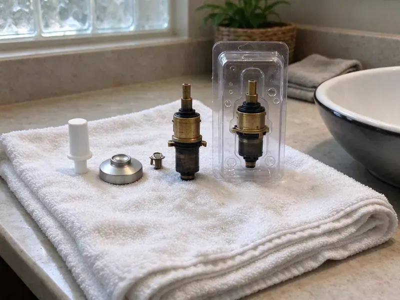
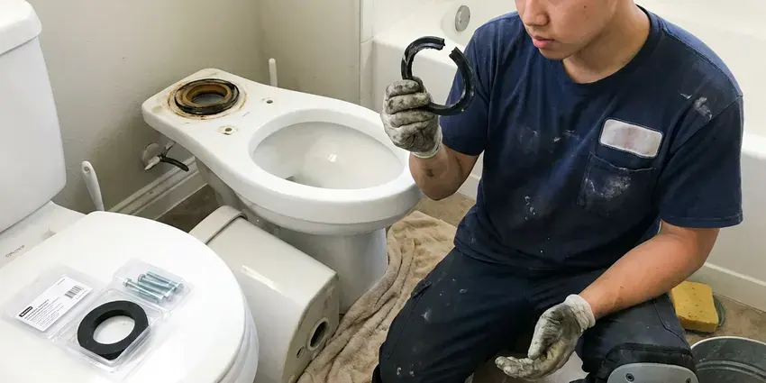
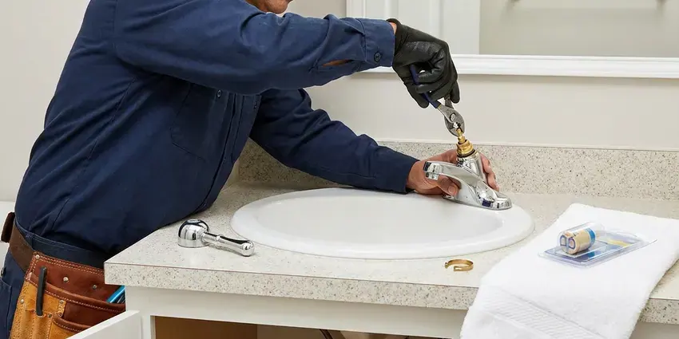
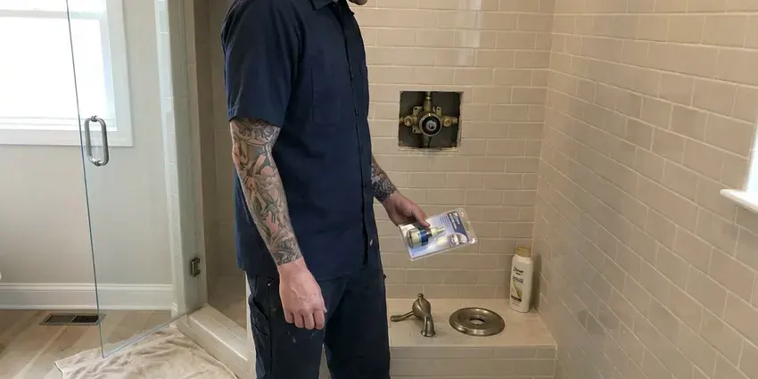
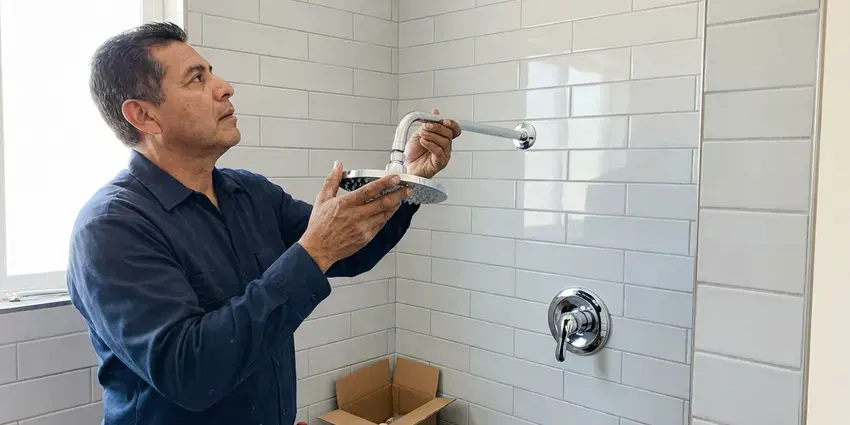

Toilet Repair in Columbus, OH
Rocking bowl, cracked tank or a supply line that drips. HRL Plumbing repairs it the same day in most of Columbus, OH.
- Licensed Plumbers
- Fill Valves on the Truck
- Workmanship Warranty
- Flappers and Seals On Hand
Get a Strong Flush Back in Columbus, OH
Tell us what the toilet is doing and you get a price range before we arrive.
Toilet Repair in Columbus, OH Done Right
HRL Plumbing works on gravity-fed toilets, pressure-assist units and dual-flush models in homes and rentals around Columbus. Hard water leaves scale in the rim jets and siphon hole, so we clean those as part of a weak-flush repair. Sometimes the porcelain is the problem. If it is, we tell you a new toilet makes more sense.
Work we handle every week:
- Fill valve, flapper, flush valve and handle rebuilds
- Rebuild tank-to-bowl gaskets and bolts
- Closet flange repair rings for base leaks

Additional Bathroom Plumbing Services in Columbus, OH
From toilets to showers, our bathroom plumbing team in Columbus, OH repairs, installs, and replaces every fixture with clean, code-compliant work.


Columbus toilet bowl replacement specialists

Local faucet repair by HRL Plumbing, Columbus

Shower Repair near Columbus

Shower Installation near Columbus

Customers
Why Choose HRL Plumbing for Toilet Repair in Columbus, OH?
Our plumbers work on Kohler canister valves, American Standard Champion 4 inch flappers, TOTO 3 inch seals and Mansfield valves, which do not take generic flappers. The right part fits the first time. A one-size flapper on those tanks tends to leak again within a few weeks.
- Leak Testing, Every repair finishes with a dye test and a dry base.
- Clear Pricing, The price you approve is the price you pay.
- Parts On Hand, Trucks carry both common flapper sizes plus wax rings.
Citywide Coverage
Coverage reaches past the city line into the suburbs and nearby towns around Columbus, OH, with the same flat rate and no extra trip fee for most addresses. Ask about your address when you call. Farther-out homes may get a wider arrival window, but not a higher price.
Experienced Team
Each technician is trained on gravity, pressure-assist and dual-flush toilets, plus the flushometer valves found in commercial restrooms. We keep training going year round. Manufacturers change flush valve designs every few years, and our plumbers keep up so a new TOTO or Kohler does not stump them.
Safety-First Approach
Sanitation matters with toilet work. We wear gloves and disinfect the flange area after the old wax comes off, and the open drain gets plugged with a rag so sewer gas does not drift into the house. Tools get wiped down before going back in the truck.
Trusted Certified Columbus Plumbing Services Professionals
At HRL Plumbing, we are proud to offer certified plumbing services throughout Columbus, OH. Credentials matter in this trade. Every repair, install and maintenance visit follows strict safety and quality rules, and the plumbers doing the work carry recognized industry credentials.
Call Us Now PHCC Plumbing Contractor Recognition
PHCC Plumbing Contractor Recognition Better Business Bureau (BBB) Accreditation
Better Business Bureau (BBB) Accreditation Angi Certified Pro
Angi Certified Pro ISO 9001 Quality Management Certification
ISO 9001 Quality Management CertificationWhat We Fix on Toilets in Columbus, OH
Flush Mechanism Repair in Columbus, OH
A weak flush usually means the tank is not filling to the fill line, the chain has too much slack, or the flapper is closing before the tank empties. We set the water level to the mark on the overflow tube and adjust the chain to about half an inch of slack. Handles break too. A cracked handle arm or a stripped mounting nut takes about five minutes to replace.

Toilet Brands We Service in Columbus
Kohler, American Standard, TOTO, Gerber and Mansfield make up most of the toilets we open, and each one uses its own flapper size or flush valve design. Put the wrong flapper on one and it will leak within weeks. We read the model number cast inside the tank wall and stock the common ones on every truck.
Commercial Toilet Repair in Columbus
Office and retail restrooms take more flushes in a day than a house sees in a month, so the parts wear faster and fail harder. Commercial bowls usually run on flushometer valves rather than tanks, and those need diaphragm kits and vacuum breakers from time to time. We carry Sloan and Zurn kits. Work can be scheduled before opening or after close.
Older Toilet Brands We Service in Columbus, OH
Older toilets from Eljer, Briggs, Crane and Universal Rundle still turn up in homes built before the 1990s, and their flush valves often take parts nobody stocks anymore. Some can take an adapter flapper, and we carry a few kinds. For the rest, we will tell you if parts are available or if replacement is the honest answer.
Fill Valve Replacement in Columbus
Old ballcock valves with a brass arm and a big plastic float are loud and slow to refill, and they tend to stick open when scale builds up in the ports. We replace them with an adjustable modern fill valve from Fluidmaster or Korky and set the height so the critical level mark sits at least an inch above the overflow. It is a twenty-minute job. You will notice the difference the first night, because the tank stops hissing.
Leaking Toilet Base Repair in Columbus, OH
A rocking bowl breaks the wax seal a little more every time someone sits down, and eventually the leak shows up as a stain or a soft spot. On slab floors the flange is set in concrete and can crack if the closet bolts are overtightened. We check it. A cracked flange gets a stainless repair ring or a new flange before the toilet goes back down.
Cracked Tank and Supply Line Repair in Columbus, OH
Braided supply lines last years, but the plastic nut on the toilet end can crack and a bulge in the braid means the inner hose is about to burst. We check every supply line on every visit. Bulges get replaced on the spot. If you still have a vinyl or solid plastic line, we change it to braided stainless before it lets go.

Toilet Flush Repair in Columbus, OH
Two or three tries to get a full flush points to a flapper closing too early, a chain hooked in the wrong hole, scale in the rim jets, or a cracked overflow tube letting water bypass the bowl. You can usually see which one with the lid off. We watch a full cycle with the lid off and replace the flush valve if the overflow tube is cracked, since it cannot be patched.
Local Toilet Repair in Columbus, OH
A local plumber knows that a Columbus house built in the 1960s probably has a cast iron closet bend and a brass angle stop that has not been turned in decades. That changes how we work. We bring a replacement stop valve on every toilet call in case the old one fails when we close it.
Phone calls get answered by a person who asks what the toilet is doing, whether it is running, rocking, leaking at the base or backing up. Those answers tell the plumber which parts to load. Expect a clear time window. Before the truck leaves, you will already have a rough price range.
HRL Plumbing at a Glance
- Licensed and insured plumbers serving Columbus, OH
- 24/7 emergency service with same-day scheduling
- Clear written estimates, no hidden fees
- 4.9-star rated by 673+ Ohio customers
Columbus Map
Columbus Information
- Population
- 913,175
- Area codes
- 614/740/380
- Service area
- Columbus and towns within a 40 mile drive
- Nearby
- Dublin, Newark, Springfield, Mansfield
A long heating season keeps water heaters and boilers working hard, so yearly maintenance helps avoid midwinter breakdowns. In a Columbus, OH bathroom, a slow leak at the toilet base can soften the subfloor and feed mold you never see.
Expert Services
Call HRL Plumbing for reliable plumbing work done by licensed pros in Columbus, OH.
Our Specialized Plumbing Services in Columbus, OH
At HRL Plumbing, we handle the full list of plumbing services across Columbus, OH. From leak detection to full system installs, our team works fast and charges fair prices on homes and commercial properties alike. Take a look at our core services below:


How a Toilet Repair Visit Works in Columbus, OH
Most toilet repairs take under an hour. Here is how they run.
Call or Book Online
Call (740) 449-7505 or use the online form. Describe what the toilet is doing and we set a time window.
Test and Diagnose
The plumber dye-tests the tank and checks the base before naming a cause.
Flat Price
You get a flat price for the repair and approve it before work starts.
Frequently Asked Questions About Toilet Repair in Columbus
Flapper or fill valve repairs usually run $100 to $250 with parts and labor, while a wax ring reset lands closer to $200 to $400 depending on the flange. A clog that needs an auger is often $150 to $350. You get the exact number after we diagnose it. Nothing gets added to that number unless you sign off on extra work.
Low water in the tank is the first thing we check, followed by a partly closed angle stop, scale in the rim jets, a clogged siphon jet and a partial clog in the trapway. Each of those robs the flush of force. We find which one before replacing parts, since a new flapper will not help a scaled jet.
Calcium and magnesium in hard water crust onto the flush valve seat, the fill valve ports and the rim jets under the bowl lip. The result is slow refills, weak flushes and leaks over time. Descaling helps. Fill valves with simpler, larger ports tend to last longer when the water is hard.
Repeat clogs usually come from wipes, toys, too much paper per flush, or an early low-flow toilet that never moved waste well. Sometimes the cause is deeper, like a sagging drain, a crushed pipe, roots in the sewer or a blocked vent that keeps the bowl from draining with full force. Cameras settle the question.
Not for typical repairs like new tank parts or a fresh seal. Adding a toilet where there was none or changing the drain line is different, and permit rules depend on the local building department in Columbus. We look up what applies to your address before we start.
Repair makes sense when the porcelain is sound and the toilet flushes well with new parts. Replacement is the better call for a cracked bowl, a toilet that clogs every week no matter what we do, or an old 3.5 gallon model that wastes water on every flush. You get a price for each option.
Constant running, a weak flush, water at the base and a bowl that rocks are the big four. Gurgling or whistling from the tank points to a valve problem, and a hairline crack in the porcelain should be looked at before it spreads. Do not wait on cracks.
Flapper and fill valve jobs take twenty to forty-five minutes. A full pull and reset on a new wax ring takes about an hour, and a flange repair adds another thirty to sixty minutes depending on what is under the floor. A clog past the trap can take longer.
Hear From Customers Who Hired Our Plumbing Experts

Karen W.
After our third pinhole leak in copper, we stopped patching. HRL Plumbing gave us a written plan room by room and repiped the house in PEX while we stayed in it. The crew covered our floors every morning and cleaned up every night.
Repiping · Newark, OHDiane F.
My kitchen faucet had dripped for months and I finally got tired of hearing it at night. HRL Plumbing came out the next morning, replaced the cartridge and the O rings, and tightened a loose base that was letting water under the sink.
Faucet Repair · Springfield, OH
Nathan E.
Our tankless heater kept throwing an error code and shutting off mid shower. The tech flushed the heat exchanger, which was full of scale, and replaced a bad flow sensor. Hot water has been steady for half a year now.
Water Heater Repair · Mansfield, OH
Mark T.
The floor drain in our office break room backed up every few weeks. The plumber ran a cable, then put a camera down and found roots at a joint about thirty feet out. Seeing it on the screen made the decision easy.
Drain Cleaning · Columbus, OH
Kevin O.
Before buying our house I paid for a sewer camera inspection. HRL Plumbing found a belly in the line that held standing water about forty feet from the cleanout. We used the video to get the sellers to fix it before closing.
Sewer Camera Inspection · Dayton, OH
Laura S.
Our 40 gallon tank started leaking from the bottom after thirteen years. The tech hauled the old one out, set a new unit with a fresh expansion tank, and had hot water running in about four hours. He took the old tank with him too.
Water Heater Replacement · Dayton, OH